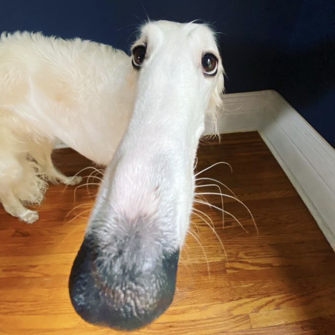
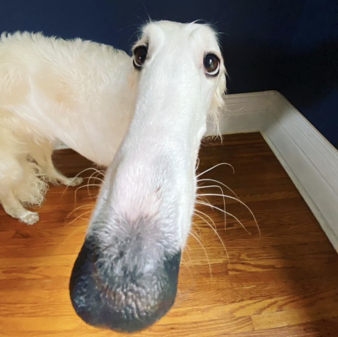

games
the uhhhhhh


GAMES!
i play games i like games
h!
sunshine lollipops

 


i like a lot of games depends on wether or not im playnig with friends or by myself (but recently i havent liked playing by myself idk why)
Fortniet
i like playing fortnite (DO NOT JUDGE YET) its fun with friends okay. its a silly game that is fun but the community is kind abad
Roadblocks (roblox)
"in life you have roblox" - DJ Khalid (my spirit animal)
i like playing bad gmaes on roblox they're silly, but i also like playing serious games on roblox when im in aserious mood. when i was little
i used to play roblox 24/7 i used to love pokemon brick bronze until nintedo shut it down :(
some roadblock games i like are (not including the silly ones) assasin, pool,
aresenal, longest answer wins,
loomian legacy
Pokémon
i love pokemons i love the adorable creatures some of my favorites are lucario, gardevoir, metagross, jellicent, sceptile and more. there are
no good pokemon games i can play though (i dont have a switch and there are no good pokemon games recently), so sad.
i played pokemon x on an emulator and it was really fun. i play pokemon go on my phone and its fun sometimes
Alien: Isolation
this gmae is really scary but its fun i lieke space stuff i used to only watch space releated moviues when i was littler and this is a space alien game that is scary i still have to fuinish it
Titanfall 2
i like this game i like the story and i like the robot i played it a long time ago and i wanna play it again i made my partner play this
i am feelimg eepy while writing this
The Forest
a fun and scary game to play with friends, i want the sequel but its expensive
Hitman 1 & 2
i love these games!! they are so fun, i want another hitman game
i need to shit
this is not a game i just need to shit rn. update: i shat